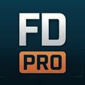

False Datum Pro is an Android field app for land surveyors: GNSS and total station data collection, coordinate geometry, linework and staking, with each job kept on the device.
Optionally, each user can connect their own Google Drive so a copy of their job folders is kept in My Drive > FD-PRO > Jobs. The app only has access to the files it creates there.
Contact: info@vaughansurveys.com